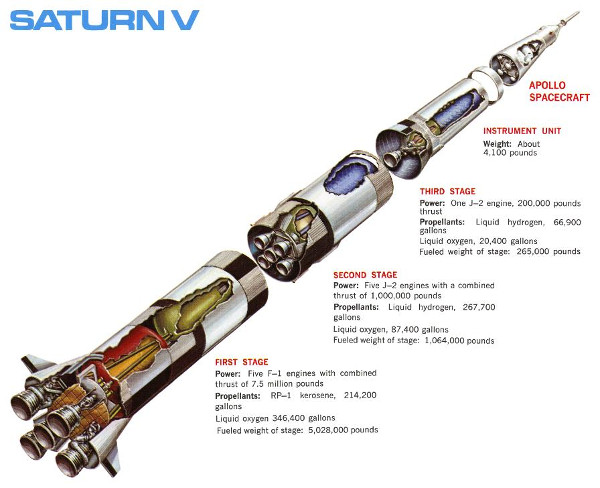

Az űrhajó
részei
- 1. fázis
felépitése 5 db f-1 -es felhajto 2 100,000l-es üzemagy tartáj
- 2. fázis
felépitése 5 db l-1 -es felhajto 1 10,000l-es üzemagy tartáj
- 3. fázis
felépitése 2 db j-2 -es felhajto 1 1,000l-es üzemagy tartáj
- hangszer készlet
szerepe : apiloták helyének biztositása
